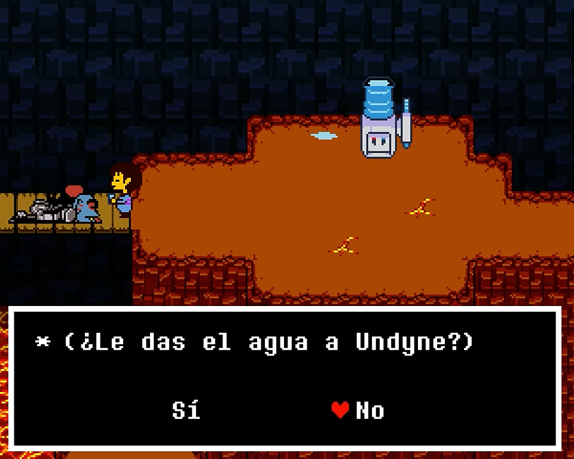

Ruta Pacifista
En la Ruta Pacifista de Undertale, el jugador debe evitar matar a cualquier enemigo. En su lugar, debe resolver los conflictos de manera pacífica y mostrar misericordia. Esta ruta revela más sobre la historia y los personajes, y lleva al final más positivo del juego. La Ruta Pacifista requiere que el jugador sea amable y compasivo en todas las interacciones.
Especificaciones de la Ruta Pacifista
Condiciones Previas:
- Debes haber completado una ruta neutral al menos una vez.
- No debes matar a ningún enemigo en tu partida actual.
Desarrollo:
- Debes perdonar a todos los enemigos, incluidos los jefes, a lo largo de todo el juego.
- Interactúa de manera positiva con todos los personajes principales: Toriel, Sans, Papyrus, Undyne, Alphys y Mettaton.
Requisitos Adicionales:
- En Snowdin, derrota a Papyrus pero perdónalo y luego hazte amigo de él.
- En Waterfall, derrota a Undyne pero perdónala y luego visita su casa para ayudarla a entrenar con Papyrus.
- En Hotland y el Laboratorio, ayuda a Alphys con sus experimentos y completa el arco de Mettaton EX.

Eventos Clave:
- Después de derrotar a Mettaton EX, regresa al laboratorio de Alphys para recibir una llamada de Undyne.
- Al realizar estas acciones, recibirás un mensaje de Alphys invitándote a su laboratorio. Aquí, accedes a la “Verdadero Laboratorio” donde descubres más sobre la historia de Alphys y su relación con los Amalgamas.
Batalla Final:
- llego la hora del juicio de sans:
- Llegas nuevamente al Castillo y enfrentas a Asgore. Durante esta batalla, Toriel interviene para evitar que pelees.
- Flowey aparece y absorbe las almas humanas y monstruos, transformándose en Asriel Dreemurr, la forma final y más poderosa.
- La batalla con Asriel es emotiva, y en lugar de pelear, debes salvar a tus amigos y, finalmente, a Asriel.

Final Verdadero Pacifista:
- Tras la batalla con Asriel, la barrera que separa a los monstruos del mundo humano se destruye.
- Todos los monstruos son liberados y pueden regresar a la superficie.
- Frisk despierta rodeado de sus amigos en el hospital de la superficie.
- Se celebra la libertad y se muestran escenas de los personajes adaptándose a la vida en la superficie.
Epílogo:
- Frisk tiene la opción de quedarse con Toriel o seguir su propio camino.
- En una escena opcional, puedes interactuar con los personajes en la superficie, viendo cómo han comenzado sus nuevas vidas.

* jeje de todas los reset que hiciste humano
* este es el mejor de todos...
* me alegra como terminado como buenos compañeros humano
* supongo que nada es perfecto
* ¿porque?.....porque querer arruinar este mundo, acaso no te basta con saber que todos somos amigos?
* ese sentimiento de querer ver que pasara de querer cumplir tu objetivo sin importar los demas ese sentimiento te hace tan humano
* si realmente eres mi amigo humano........no entraras ahi